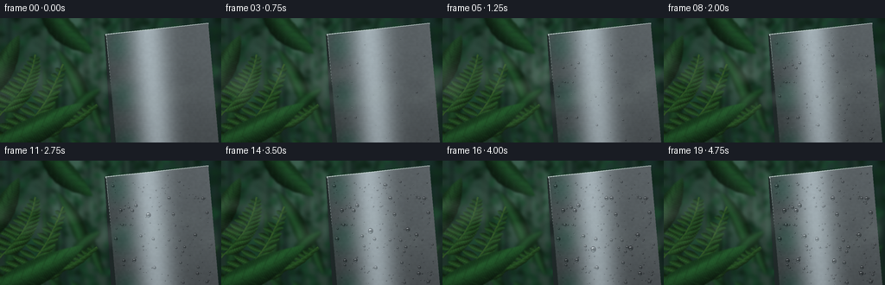
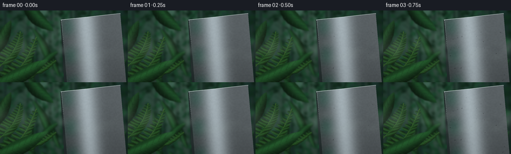
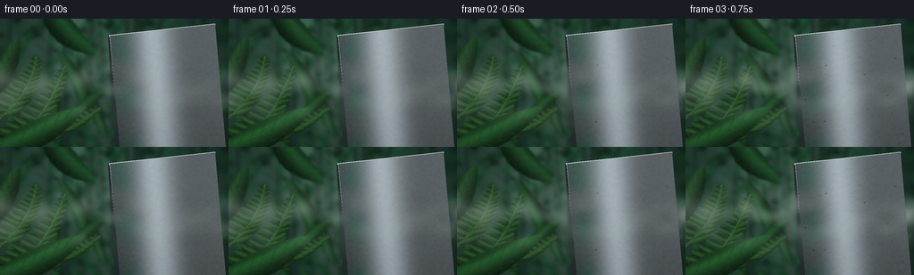
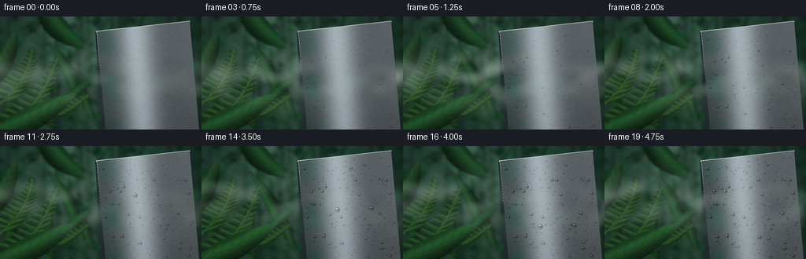

CODING AGENTS AS PIXEL WORLD MODELS
traex/GPT-6.1-Sol · phygen_113
点击播放 · 原生 RGB 像素
逐轮保存的候选
回放视频、检查图与代码变化。
每份候选均可单独播放。实际图片检查记录在下方工具轨迹中。
候选 01播放与检查图
点击播放 · 原生 RGB 像素


展开代码变化
--- 上一保存版本
+++ 本次保存版本
@@ -0,0 +1,231 @@
+from pathlib import Path
+import numpy as np
+from PIL import Image, ImageDraw, ImageFilter
+import artifact_io
+
+ROOT=Path(__file__).resolve().parent
+W,H,S=256,144,3
+w,h=W*S,H*S
+rng=np.random.default_rng(113)
+Y,X=np.mgrid[0:h,0:w].astype(float)/S
+
+def softnoise(seed,scale=28):
+ r=np.random.default_rng(seed)
+ im=Image.fromarray(np.uint8(r.random((max(3,h//scale),max(3,w//scale)))*255))
+ return np.array(im.resize((w,h),Image.Resampling.BICUBIC),float)/255
+
+# Dense, layered rainforest receding into luminous humid air.
+bn=softnoise(51,38)
+light=np.exp(-((X-96)/80)**2-((Y-27)/89)**2)
+bg=np.zeros((h,w,3),float)
+for k,(c,a) in enumerate([(13,43),(34,55),(28,43)]): bg[:,:,k]=c+a*light+bn*(9 if k==0 else 14)
+forest=Image.fromarray(np.uint8(bg))
+d=ImageDraw.Draw(forest)
+for j in range(47):
+ x=float(rng.uniform(-10,265)); z=rng.uniform(.1,1)
+ ytop=rng.uniform(-70,30); thick=rng.uniform(.8,4.5)*(1.2-z*.6)
+ color=(int(12+z*32),int(30+z*36),int(25+z*30))
+ d.polygon([(x*S,ytop*S),((x+thick)*S,ytop*S),((x+thick+rng.uniform(-10,10))*S,h),(x*S,h)],fill=color)
+ for k in range(2):
+ yy=rng.uniform(18,120); endx=x+rng.uniform(-35,35)
+ d.line([(x*S,yy*S),(endx*S,(yy-20)*S)],fill=color,width=max(1,int(thick*S*.4)))
+# Many distant lanceolate leaves, with occasional dark interlocking canopy.
+for j in range(640):
+ cx,cy=rng.uniform(-25,281),rng.uniform(-20,165)
+ le=rng.uniform(3,18); width=rng.uniform(1.4,5)
+ angle=rng.uniform(-np.pi,np.pi)
+ dx,dy=np.cos(angle),np.sin(angle); nx,ny=-dy,dx
+ points=[]
+ for side in [1,-1]:
+ values=np.linspace(0,1,8)
+ if side==-1: values=values[::-1]
+ for t in values:
+ q=width*np.sin(np.pi*t)**.8*side
+ points.append(((cx+le*(t-.5)*dx+q*nx)*S,(cy+le*(t-.5)*dy+q*ny)*S))
+ shade=rng.uniform(.55,1.4)
+ d.polygon(points,fill=tuple(int(v*shade) for v in (18,52,32)))
+forest=forest.filter(ImageFilter.GaussianBlur(2.2*S))
+# Mid-ground foliage retains its leaf anatomy but stays outside the focal plane.
+def leaf(canvas,base,tip,width,col,seed,blur=0):
+ rr=np.random.default_rng(seed)
+ bx,by=base; tx,ty=tip
+ vx,vy=tx-bx,ty-by; length=np.hypot(vx,vy); dx,dy=vx/length,vy/length; nx,ny=-dy,dx
+ bend=rr.uniform(-.09,.09)*length
+ outline=[]
+ for side in (1,-1):
+ ts=np.linspace(0,1,35)
+ if side<0:ts=ts[::-1]
+ for t in ts:
+ wave=1+.025*np.sin(t*57+seed)
+ spread=width*np.sin(np.pi*t)**.8*wave*side
+ curve=bend*np.sin(np.pi*t)
+ outline.append(((bx+vx*t+(spread+curve)*nx)*S,(by+vy*t+(spread+curve)*ny)*S))
+ mask=Image.new('L',(w,h)); md=ImageDraw.Draw(mask);md.polygon(outline,fill=255)
+ t=((X-bx)*dx+(Y-by)*dy)/length
+ q=((X-bx)*nx+(Y-by)*ny-bend*np.sin(np.pi*t))/width
+ center=.5+.30*np.exp(-((q+.21)/.5)**2)-.27*np.clip(q,0,1)
+ rib=.055*np.cos(t*length*2.5-np.abs(q)*4)
+ gloss=.13*np.exp(-((q+.42)/.19)**2)*np.exp(-((t-.55)/.5)**2)
+ tex=softnoise(seed+331,4)*.08
+ colors=np.clip(np.array(col)[None,None,:]*(center+rib+tex+gloss)[:,:,None],0,255)
+ layer=Image.fromarray(np.uint8(colors)); layer.putalpha(mask)
+ ld=ImageDraw.Draw(layer)
+ mid=[]
+ for tt in np.linspace(0,1,40):
+ mid.append(((bx+vx*tt+bend*np.sin(np.pi*tt)*nx)*S,(by+vy*tt+bend*np.sin(np.pi*tt)*ny)*S))
+ ld.line(mid,fill=tuple(int(c*.62) for c in col)+(190,),width=max(1,int(.42*S)))
+ for tt in np.arange(.16,.88,.105):
+ for side in (-1,1):
+ endt=min(.97,tt+.1)
+ q2=side*width*np.sin(np.pi*endt)**.8*.88
+ ld.line([((bx+vx*tt+bend*np.sin(np.pi*tt)*nx)*S,(by+vy*tt+bend*np.sin(np.pi*tt)*ny)*S),((bx+vx*endt+(bend*np.sin(np.pi*endt)+q2)*nx)*S,(by+vy*endt+(bend*np.sin(np.pi*endt)+q2)*ny)*S)],fill=tuple(int(c*.49) for c in col)+(110,),width=1)
+ if blur:layer=layer.filter(ImageFilter.GaussianBlur(blur*S))
+ canvas.alpha_composite(layer)
+
+forest=forest.convert('RGBA')
+for j in range(30):
+ base=(rng.uniform(-15,280),rng.uniform(110,185))
+ tip=(base[0]+rng.uniform(-45,45),base[1]-rng.uniform(30,90))
+ leaf(forest,base,tip,rng.uniform(3,9),(35,89,45),400+j,1.6)
+# Distinct arching fern in the left half.
+fd=ImageDraw.Draw(forest)
+for idx,(base,tip) in enumerate([((0,156),(73,53)),((15,150),(112,100)),((-8,119),(41,42))]):
+ bx,by=base;tx,ty=tip
+ curve=[]
+ for tt in np.linspace(0,1,35):curve.append(((bx+(tx-bx)*tt+11*np.sin(np.pi*tt))*S,(by+(ty-by)*tt)*S))
+ fd.line(curve,fill=(50,87,37,255),width=2*S)
+ for i,tt in enumerate(np.linspace(.14,.92,12)):
+ px=bx+(tx-bx)*tt+11*np.sin(np.pi*tt);py=by+(ty-by)*tt
+ le=(1-tt)*26+4
+ for side in [-1,1]:
+ leaf(forest,(px,py),(px+side*le,py-le*.45),2.0+(1-tt)*2.5,(49,108,45),800+idx*50+i*2+(side+1)//2,.5)
+# Large close foliage frames the composition, never obscuring the condensation.
+leaf(forest,(-21,154),(96,99),15,(36,97,45),199,0.65)
+leaf(forest,(-22,99),(22,20),13,(36,83,42),200,.7)
+leaf(forest,(45,-31),(107,41),14,(30,82,41),201,1.0)
+background=np.array(forest.convert('RGB'),float)
+
+# Upright sheet of cool brushed stainless steel, obliquely viewed.
+# Local surface coordinates are mapped into a slightly tapered metal plane.
+u=(X-123-.087*(Y-19))/119
+v=(Y-19+13*u)/147
+metal_mask=(u>=0)&(u<=1)&(v>=0)&(v<=1)
+noise=softnoise(99,7)-.5
+rand=np.random.default_rng(94)
+brush=np.array(Image.fromarray(np.uint8(rand.uniform(40,210,(h,36)))).resize((w,h),Image.Resampling.BILINEAR),float)/255-.5
+spec=np.exp(-((u-.40)/.185)**2)
+shade=81+92*spec+28*u-24*v+5*noise+4*brush
+metal=np.stack([shade*.91,shade*.98,shade*1.015],axis=2)
+# Diffuse green environmental reflection across one margin.
+green=np.exp(-((u-.10)/.12)**2)*(10+8*np.sin(v*16))
+metal[:,:,0]-=green*.9;metal[:,:,1]+=green*.2;metal[:,:,2]-=green*.25
+# Fine horizontal rolling marks and a cool broad reflection.
+metal+=((np.sin(Y*15)+np.sin(Y*29))*0.45)[:,:,None]
+# A narrow dark side and polished cut edge anchor the sheet as a physical object.
+back=Image.fromarray(np.uint8(background)).convert('RGBA')
+dd=ImageDraw.Draw(back)
+dd.polygon([(121*S,19*S),(123*S,19*S),(136*S,168*S),(130*S,168*S)],fill=(28,37,37,255))
+dd.line([(122*S,19*S),(241*S,6*S)],fill=(204,218,215,255),width=2*S)
+dd.line([(123*S,19*S),(137*S,166*S)],fill=(173,191,187,255),width=S)
+background=np.array(back.convert('RGB'),float)
+
+# Smooth, continuous wisps slide from humid vegetation onto the metal.
+fogfields=[]
+for seed,sz in [(300,45),(301,85),(302,22)]:
+ nr=np.random.default_rng(seed)
+ little=np.uint8(nr.uniform(0,255,(10,38)))
+ fogfields.append(np.array(Image.fromarray(little).resize((w*3,h),Image.Resampling.BICUBIC).filter(ImageFilter.GaussianBlur(sz*.15)),float)/255)
+
+# Condensation nuclei: distributed across the plate, gradually emerging and coalescing.
+drops=[]
+r=np.random.default_rng(675)
+for j in range(335):
+ pu,pv=r.uniform(.025,.975),r.uniform(.035,.98)
+ start=r.uniform(.03,.76)
+ radius=r.uniform(.32,1.28)
+ if j<43:radius=r.uniform(1.3,2.65);start=r.uniform(0,.35)
+ drops.append((pu,pv,start,radius,j))
+
+def droplet(img,cx,cy,rx,ry,opacity=1):
+ # A refractive spherical cap with a dark rim, bright sky reflection and lower caustic.
+ xa=max(0,int((cx-rx*1.4)*S));xb=min(w,int((cx+rx*1.4)*S)+2)
+ ya=max(0,int((cy-ry*1.35)*S));yb=min(h,int((cy+ry*1.35)*S)+2)
+ if xb<=xa or yb<=ya:return
+ xx=(X[ya:yb,xa:xb]-cx)/rx; yy=(Y[ya:yb,xa:xb]-cy)/ry
+ rr=xx*xx+yy*yy
+ mask=np.clip((1.05-rr)*9,0,1)*opacity
+ patch=img[ya:yb,xa:xb]
+ # Local refraction reverses the broad metal reflection inside the liquid cap.
+ refrx=np.clip(((cx-xx*rx*.65)*S).astype(int),0,w-1)
+ refry=np.clip(((cy-yy*ry*.7)*S).astype(int),0,h-1)
+ refr=metal[refry,refrx].copy()
+ rim=np.exp(-((np.sqrt(rr)-.88)/.12)**2)
+ shadow=np.exp(-((xx-.26)**2/.23+(yy-.30)**2/.45))
+ caustic=np.exp(-((yy-.67)/.12)**2)*np.exp(-(xx/.65)**4)
+ glint=np.exp(-((xx+.34)**2/.034+(yy+.43)**2/.018))
+ glint2=np.exp(-((xx+.13)**2/.018+(yy+.63)**2/.008))
+ reflected=np.exp(-((yy+.53+xx*.15)/.19)**2)*np.exp(-((xx+.1)/.77)**6)
+ refr=refr*.86-rim[:,:,None]*np.array([37,40,38])-shadow[:,:,None]*23
+ refr+=caustic[:,:,None]*np.array([62,70,68])
+ refr+=reflected[:,:,None]*40+glint[:,:,None]*145+glint2[:,:,None]*52
+ img[ya:yb,xa:xb]=patch*(1-mask[:,:,None])+np.clip(refr,0,255)*mask[:,:,None]
+
+frames=[]
+for frame in range(20):
+ time=frame/19
+ image=background.copy()
+ image[metal_mask]=metal[metal_mask]
+ # Microscopic damp haze appears first, then resolves into distinct wet beads.
+ damp=(.5+.5*np.sin(X*.065+Y*.05))*time*1.5
+ image[metal_mask]+=damp[metal_mask,None]
+ # Gravity-driven beads gather from the stationary nuclei into narrow runnels.
+ runners=[(.37,.31,2.7,.48),(.73,.42,2.35,.62),(.55,.11,2.1,.73)]
+ tracks=[]
+ for k,(pu,pv,size,onset) in enumerate(runners):
+ if time<=onset:continue
+ progress=(time-onset)/(1-onset)
+ finalv=pv+progress*progress*.60
+ tracks.append((pu,pv,finalv))
+ trail=Image.new('L',(w,h));td=ImageDraw.Draw(trail)
+ pts=[]
+ for tv in np.linspace(pv,finalv,65):
+ uu=pu+.007*np.sin(tv*42+k)
+ yy=19+tv*147-13*uu;xx=123+119*uu+.087*(yy-19)
+ pts.append((xx*S,yy*S))
+ if len(pts)>1:td.line(pts,fill=180,width=int(S*.75))
+ tm=np.array(trail.filter(ImageFilter.GaussianBlur(.25*S)),float)/255*metal_mask
+ image=image*(1-tm[:,:,None]*.25)+(metal-12)*(tm[:,:,None]*.25)
+ # Nuclei do not teleport; they grow in place, except when a running bead absorbs them.
+ for pu,pv,start,maximum,idx in sorted(drops,key=lambda a:a[3]):
+ if time<start:continue
+ age=(time-start)/(1-start)
+ radius=maximum*(.23+.83*np.sqrt(age))
+ eaten=any(abs(pu-tu)<.023 and lo<pv<hi for tu,lo,hi in tracks)
+ if eaten: continue
+ yy=19+pv*147-13*pu;xx=123+119*pu+.087*(yy-19)
+ droplet(image,xx,yy,radius*.9,radius,min(1,age*8+.18))
+ for k,(pu,pv,size,onset) in enumerate(runners):
+ if time<onset:continue
+ progress=(time-onset)/(1-onset)
+ pv=pv+progress*progress*.60
+ pu+=.007*np.sin(pv*42+k)
+ yy=19+pv*147-13*pu;xx=123+119*pu+.087*(yy-19)
+ droplet(image,xx,yy,size*(1+progress*.18),size*(1.04+progress*.40))
+ # Low-contrast airborne vapor is in front of, as well as behind, the cold sheet.
+ shift=int(time*153*S)
+ f0=fogfields[0][:,shift:shift+w]
+ f1=fogfields[1][:,int(shift*.6):int(shift*.6)+w]
+ f2=fogfields[2][:,int(shift*.85):int(shift*.85)+w]
+ band=np.exp(-((Y-(72+12*np.sin(X*.012-time*1.9)))/29)**2)
+ wisps=np.maximum(0,(f0*.58+f1*.26+f2*.16)-.35)
+ fogalpha=(wisps*.53*band+.028)*(1-.62*metal_mask)
+ fogalpha*=.65+.35*np.sin(time*3.8+.7)**2
+ image=image*(1-fogalpha[:,:,None])+np.array([174,193,183])*fogalpha[:,:,None]
+ # Optical falloff and restrained sensor texture unify the macro shot.
+ vignette=1-.16*((X-137)/172)**2-.08*((Y-75)/113)**2
+ image*=vignette[:,:,None]
+ grain=np.random.default_rng(900).normal(0,.55,(h,w,1))
+ image=np.clip(image+grain,0,255).astype(np.uint8)
+ im=Image.fromarray(image).resize((W,H),Image.Resampling.LANCZOS)
+ frames.append(np.array(im))
+artifact_io.save(np.array(frames,dtype=np.uint8),ROOT)
候选 02播放与检查图
点击播放 · 原生 RGB 像素


展开代码变化
--- 上一保存版本
+++ 本次保存版本
@@ -218,7 +218,11 @@
f2=fogfields[2][:,int(shift*.85):int(shift*.85)+w]
band=np.exp(-((Y-(72+12*np.sin(X*.012-time*1.9)))/29)**2)
wisps=np.maximum(0,(f0*.58+f1*.26+f2*.16)-.35)
- fogalpha=(wisps*.53*band+.028)*(1-.62*metal_mask)
+ # Soft wandering filaments make the approaching mist readable in the humid air.
+ filament1=np.exp(-((Y-(66+9*np.sin(X*.034-time*2.8)+4*np.sin(X*.075+time)))/9.0)**2)
+ filament2=np.exp(-((Y-(95+12*np.sin(X*.024-time*2.2)))/13.0)**2)
+ density=.66+.34*np.sin(X*.021-time*3.1)**2
+ fogalpha=(wisps*.95*band+.036+.15*filament1*density+.09*filament2)*(1-.58*metal_mask)
fogalpha*=.65+.35*np.sin(time*3.8+.7)**2
image=image*(1-fogalpha[:,:,None])+np.array([174,193,183])*fogalpha[:,:,None]
# Optical falloff and restrained sensor texture unify the macro shot.
可观测工具轨迹
实际执行的命令与返回图片。
命令 1exit 0
/bin/bash -lc 'ls -la && cat prompt.txt && cat GENERATION_RULES.md && cat task_spec.json'
命令 2exit 0
/bin/bash -lc 'cat artifact_io.py'
命令 3exit 0
/bin/bash -lc "cat > generate.py <<'PY'
from pathlib import Path
import numpy as np
from PIL import Image, ImageDraw, ImageFilter
import artifact_io
ROOT=Path(__file__).resolve().parent
W,H,S=256,144,3
w,h=W*S,H*S
rng=np.random.default_rng(113)
Y,X=np.mgrid[0:h,0:w].astype(float)/S
def softnoise(seed,scale=28):
r=np.random.default_rng(seed)
im=Image.fromarray(np.uint8(r.random((max(3,h//scale),max(3,w//scale)))*255))
return np.array(im.resize((w,h),Image.Resampling.BICUBIC),float)/255
# Dense, layered rainforest receding into luminous humid air.
bn=softnoise(51,38)
light=np.exp(-((X-96)/80)**2-((Y-27)/89)**2)
bg=np.zeros((h,w,3),float)
for k,(c,a) in enumerate([(13,43),(34,55),(28,43)]): bg[:,:,k]=c+a*light+bn*(9 if k==0 else 14)
forest=Image.fromarray(np.uint8(bg))
d=ImageDraw.Draw(forest)
for j in range(47):
x=float(rng.uniform(-10,265)); z=rng.uniform(.1,1)
ytop=rng.uniform(-70,30); thick=rng.uniform(.8,4.5)*(1.2-z*.6)
color=(int(12+z*32),int(30+z*36),int(25+z*30))
d.polygon([(x*S,ytop*S),((x+thick)*S,ytop*S),((x+thick+rng.uniform(-10,10))*S,h),(x*S,h)],fill=color)
for k in range(2):
yy=rng.uniform(18,120); endx=x+rng.uniform(-35,35)
d.line([(x*S,yy*S),(endx*S,(yy-20)*S)],fill=color,width=max(1,int(thick*S*.4)))
# Many distant lanceolate leaves, with occasional dark interlocking canopy.
for j in range(640):
cx,cy=rng.uniform(-25,281),rng.uniform(-20,165)
le=rng.uniform(3,18); width=rng.uniform(1.4,5)
angle=rng.uniform(-np.pi,np.pi)
dx,dy=np.cos(angle),np.sin(angle); nx,ny=-dy,dx
points=[]
for side in [1,-1]:
values=np.linspace(0,1,8)
if side==-1: values=values[::-1]
for t in values:
q=width*np.sin(np.pi*t)**.8*side
points.append(((cx+le*(t-.5)*dx+q*nx)*S,(cy+le*(t-.5)*dy+q*ny)*S))
shade=rng.uniform(.55,1.4)
d.polygon(points,fill=tuple(int(v*shade) for v in (18,52,32)))
forest=forest.filter(ImageFilter.GaussianBlur(2.2*S))
# Mid-ground foliage retains its leaf anatomy but stays outside the focal plane.
def leaf(canvas,base,tip,width,col,seed,blur=0):
rr=np.random.default_rng(seed)
bx,by=base; tx,ty=tip
vx,vy=tx-bx,ty-by; length=np.hypot(vx,vy); dx,dy=vx/length,vy/length; nx,ny=-dy,dx
bend=rr.uniform(-.09,.09)*length
outline=[]
for side in (1,-1):
ts=np.linspace(0,1,35)
if side<0:ts=ts[::-1]
for t in ts:
wave=1+.025*np.sin(t*57+seed)
spread=width*np.sin(np.pi*t)**.8*wave*side
curve=bend*np.sin(np.pi*t)
outline.append(((bx+vx*t+(spread+curve)*nx)*S,(by+vy*t+(spread+curve)*ny)*S))
mask=Image.new('L',(w,h)); md=ImageDraw.Draw(mask);md.polygon(outline,fill=255)
t=((X-bx)*dx+(Y-by)*dy)/length
q=((X-bx)*nx+(Y-by)*ny-bend*np.sin(np.pi*t))/width
center=.5+.30*np.exp(-((q+.21)/.5)**2)-.27*np.clip(q,0,1)
rib=.055*np.cos(t*length*2.5-np.abs(q)*4)
gloss=.13*np.exp(-((q+.42)/.19)**2)*np.exp(-((t-.55)/.5)**2)
tex=softnoise(seed+331,4)*.08
colors=np.clip(np.array(col)[None,None,:]*(center+rib+tex+gloss)[:,:,None],0,255)
layer=Image.fromarray(np.uint8(colors)); layer.putalpha(mask)
ld=ImageDraw.Draw(layer)
mid=[]
for tt in np.linspace(0,1,40):
mid.append(((bx+vx*tt+bend*np.sin(np.pi*tt)*nx)*S,(by+vy*tt+bend*np.sin(np.pi*tt)*ny)*S))
ld.line(mid,fill=tuple(int(c*.62) for c in col)+(190,),width=max(1,int(.42*S)))
for tt in np.arange(.16,.88,.105):
for side in (-1,1):
endt=min(.97,tt+.1)
q2=side*width*np.sin(np.pi*endt)**.8*.88
ld.line([((bx+vx*tt+bend*np.sin(np.pi*tt)*nx)*S,(by+vy*tt+bend*np.sin(np.pi*tt)*ny)*S),((bx+vx*endt+(bend*np.sin(np.pi*endt)+q2)*nx)*S,(by+vy*endt+(bend*np.sin(np.pi*endt)+q2)*ny)*S)],fill=tuple(int(c*.49) for c in col)+(110,),width=1)
if blur:layer=layer.filter(ImageFilter.GaussianBlur(blur*S))
canvas.alpha_composite(layer)
forest=forest.convert('RGBA')
for j in range(30):
base=(rng.uniform(-15,280),rng.uniform(110,185))
tip=(base[0]+rng.uniform(-45,45),base[1]-rng.uniform(30,90))
leaf(forest,base,tip,rng.uniform(3,9),(35,89,45),400+j,1.6)
# Distinct arching fern in the left half.
fd=ImageDraw.Draw(forest)
for idx,(base,tip) in enumerate([((0,156),(73,53)),((15,150),(112,100)),((-8,119),(41,42))]):
bx,by=base;tx,ty=tip
curve=[]
for tt in np.linspace(0,1,35):curve.append(((bx+(tx-bx)*tt+11*np.sin(np.pi*tt))*S,(by+(ty-by)*tt)*S))
fd.line(curve,fill=(50,87,37,255),width=2*S)
for i,tt in enumerate(np.linspace(.14,.92,12)):
px=bx+(tx-bx)*tt+11*np.sin(np.pi*tt);py=by+(ty-by)*tt
le=(1-tt)*26+4
for side in [-1,1]:
leaf(forest,(px,py),(px+side*le,py-le*.45),2.0+(1-tt)*2.5,(49,108,45),800+idx*50+i*2+(side+1)//2,.5)
# Large close foliage frames the composition, never obscuring the condensation.
leaf(forest,(-21,154),(96,99),15,(36,97,45),199,0.65)
leaf(forest,(-22,99),(22,20),13,(36,83,42),200,.7)
leaf(forest,(45,-31),(107,41),14,(30,82,41),201,1.0)
background=np.array(forest.convert('RGB'),float)
# Upright sheet of cool brushed stainless steel, obliquely viewed.
# Local surface coordinates are mapped into a slightly tapered metal plane.
u=(X-123-.087*(Y-19))/119
v=(Y-19+13*u)/147
metal_mask=(u>=0)&(u<=1)&(v>=0)&(v<=1)
noise=softnoise(99,7)-.5
rand=np.random.default_rng(94)
brush=np.array(Image.fromarray(np.uint8(rand.uniform(40,210,(h,36)))).resize((w,h),Image.Resampling.BILINEAR),float)/255-.5
spec=np.exp(-((u-.40)/.185)**2)
shade=81+92*spec+28*u-24*v+5*noise+4*brush
metal=np.stack([shade*.91,shade*.98,shade*1.015],axis=2)
# Diffuse green environmental reflection across one margin.
green=np.exp(-((u-.10)/.12)**2)*(10+8*np.sin(v*16))
metal[:,:,0]-=green*.9;metal[:,:,1]+=green*.2;metal[:,:,2]-=green*.25
# Fine horizontal rolling marks and a cool broad reflection.
metal+=((np.sin(Y*15)+np.sin(Y*29))*0.45)[:,:,None]
# A narrow dark side and polished cut edge anchor the sheet as a physical object.
back=Image.fromarray(np.uint8(background)).convert('RGBA')
dd=ImageDraw.Draw(back)
dd.polygon([(121*S,19*S),(123*S,19*S),(136*S,168*S),(130*S,168*S)],fill=(28,37,37,255))
dd.line([(122*S,19*S),(241*S,6*S)],fill=(204,218,215,255),width=2*S)
dd.line([(123*S,19*S),(137*S,166*S)],fill=(173,191,187,255),width=S)
background=np.array(back.convert('RGB'),float)
# Smooth, continuous wisps slide from humid vegetation onto the metal.
fogfields=[]
for seed,sz in [(300,45),(301,85),(302,22)]:
nr=np.random.default_rng(seed)
little=np.uint8(nr.uniform(0,255,(10,38)))
fogfields.append(np.array(Image.fromarray(little).resize((w*3,h),Image.Resampling.BICUBIC).filter(ImageFilter.GaussianBlur(sz*.15)),float)/255)
# Condensation nuclei: distributed across the plate, gradually emerging and coalescing.
drops=[]
r=np.random.default_rng(675)
for j in range(335):
pu,pv=r.uniform(.025,.975),r.uniform(.035,.98)
start=r.uniform(.03,.76)
radius=r.uniform(.32,1.28)
if j<43:radius=r.uniform(1.3,2.65);start=r.uniform(0,.35)
drops.append((pu,pv,start,radius,j))
def droplet(img,cx,cy,rx,ry,opacity=1):
# A refractive spherical cap with a dark rim, bright sky reflection and lower caustic.
xa=max(0,int((cx-rx*1.4)*S));xb=min(w,int((cx+rx*1.4)*S)+2)
ya=max(0,int((cy-ry*1.35)*S));yb=min(h,int((cy+ry*1.35)*S)+2)
if xb<=xa or yb<=ya:return
xx=(X[ya:yb,xa:xb]-cx)/rx; yy=(Y[ya:yb,xa:xb]-cy)/ry
rr=xx*xx+yy*yy
mask=np.clip((1.05-rr)*9,0,1)*opacity
patch=img[ya:yb,xa:xb]
# Local refraction reverses the broad metal reflection inside the liquid cap.
refrx=np.clip(((cx-xx*rx*.65)*S).astype(int),0,w-1)
refry=np.clip(((cy-yy*ry*.7)*S).astype(int),0,h-1)
refr=metal[refry,refrx].copy()
rim=np.exp(-((np.sqrt(rr)-.88)/.12)**2)
shadow=np.exp(-((xx-.26)**2/.23+(yy-.30)**2/.45))
caustic=np.exp(-((yy-.67)/.12)**2)*np.exp(-(xx/.65)**4)
glint=np.exp(-((xx+.34)**2/.034+(yy+.43)**2/.018))
glint2=np.exp(-((xx+.13)**2/.018+(yy+.63)**2/.008))
reflected=np.exp(-((yy+.53+xx*.15)/.19)**2)*np.exp(-((xx+.1)/.77)**6)
refr=refr*.86-rim[:,:,None]*np.array([37,40,38])-shadow[:,:,None]*23
refr+=caustic[:,:,None]*np.array([62,70,68])
refr+=reflected[:,:,None]*40+glint[:,:,None]*145+glint2[:,:,None]*52
img[ya:yb,xa:xb]=patch*(1-mask[:,:,None])+np.clip(refr,0,255)*mask[:,:,None]
frames=[]
for frame in range(20):
time=frame/19
image=background.copy()
image[metal_mask]=metal[metal_mask]
# Microscopic damp haze appears first, then resolves into distinct wet beads.
damp=(.5+.5*np.sin(X*.065+Y*.05))*time*1.5
image[metal_mask]+=damp[metal_mask,None]
# Gravity-driven beads gather from the stationary nuclei into narrow runnels.
runners=[(.37,.31,2.7,.48),(.73,.42,2.35,.62),(.55,.11,2.1,.73)]
tracks=[]
for k,(pu,pv,size,onset) in enumerate(runners):
if time<=onset:continue
progress=(time-onset)/(1-onset)
finalv=pv+progress*progress*.60
tracks.append((pu,pv,finalv))
trail=Image.new('L',(w,h));td=ImageDraw.Draw(trail)
pts=[]
for tv in np.linspace(pv,finalv,65):
uu=pu+.007*np.sin(tv*42+k)
yy=19+tv*147-13*uu;xx=123+119*uu+.087*(yy-19)
pts.append((xx*S,yy*S))
if len(pts)>1:td.line(pts,fill=180,width=int(S*.75))
tm=np.array(trail.filter(ImageFilter.GaussianBlur(.25*S)),float)/255*metal_mask
image=image*(1-tm[:,:,None]*.25)+(metal-12)*(tm[:,:,None]*.25)
# Nuclei do not teleport; they grow in place, except when a running bead absorbs them.
for pu,pv,start,maximum,idx in sorted(drops,key=lambda a:a[3]):
if time<start:continue
age=(time-start)/(1-start)
radius=maximum*(.23+.83*np.sqrt(age))
eaten=any(abs(pu-tu)<.023 and lo<pv<hi for tu,lo,hi in tracks)
if eaten: continue
yy=19+pv*147-13*pu;xx=123+119*pu+.087*(yy-19)
droplet(image,xx,yy,radius*.9,radius,min(1,age*8+.18))
for k,(pu,pv,size,onset) in enumerate(runners):
if time<onset:continue
progress=(time-onset)/(1-onset)
pv=pv+progress*progress*.60
pu+=.007*np.sin(pv*42+k)
yy=19+pv*147-13*pu;xx=123+119*pu+.087*(yy-19)
droplet(image,xx,yy,size*(1+progress*.18),size*(1.04+progress*.40))
# Low-contrast airborne vapor is in front of, as well as behind, the cold sheet.
shift=int(time*153*S)
f0=fogfields[0][:,shift:shift+w]
f1=fogfields[1][:,int(shift*.6):int(shift*.6)+w]
f2=fogfields[2][:,int(shift*.85):int(shift*.85)+w]
band=np.exp(-((Y-(72+12*np.sin(X*.012-time*1.9)))/29)**2)
wisps=np.maximum(0,(f0*.58+f1*.26+f2*.16)-.35)
fogalpha=(wisps*.53*band+.028)*(1-.62*metal_mask)
fogalpha*=.65+.35*np.sin(time*3.8+.7)**2
image=image*(1-fogalpha[:,:,None])+np.array([174,193,183])*fogalpha[:,:,None]
# Optical falloff and restrained sensor texture unify the macro shot.
vignette=1-.16*((X-137)/172)**2-.08*((Y-75)/113)**2
image*=vignette[:,:,None]
grain=np.random.default_rng(900).normal(0,.55,(h,w,1))
image=np.clip(image+grain,0,255).astype(np.uint8)
im=Image.fromarray(image).resize((W,H),Image.Resampling.LANCZOS)
frames.append(np.array(im))
artifact_io.save(np.array(frames,dtype=np.uint8),ROOT)
PY
python generate.py"命令 4exit 0
/bin/bash -lc "python - <<'PY'
p='generate.py'
s=open(p).read()
s=s.replace('fogalpha=(wisps*.53*band+.028)*(1-.62*metal_mask)', '''# Soft wandering filaments make the approaching mist readable in the humid air.
filament1=np.exp(-((Y-(66+9*np.sin(X*.034-time*2.8)+4*np.sin(X*.075+time)))/9.0)**2)
filament2=np.exp(-((Y-(95+12*np.sin(X*.024-time*2.2)))/13.0)**2)
density=.66+.34*np.sin(X*.021-time*3.1)**2
fogalpha=(wisps*.95*band+.036+.15*filament1*density+.09*filament2)*(1-.58*metal_mask)''')
open(p,'w').write(s)
PY
python generate.py"视觉工具实际返回图片 1

视觉工具实际返回图片 2

保存候选 2 份；完成命令 4 次；可验证图片返回 2 张。原始 API 响应与完整日志保留在本地。